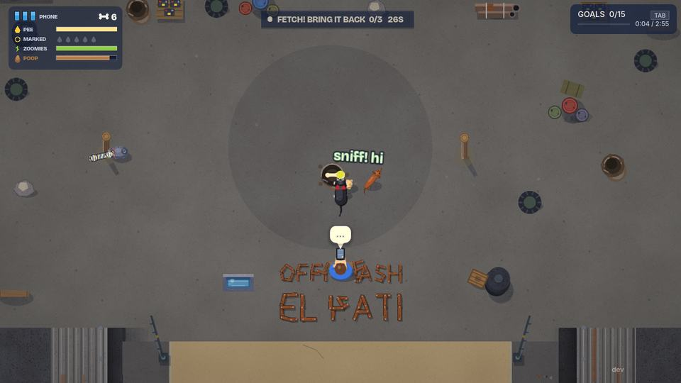

La Ferralla
The junkyard after closing
Stacks of stripped delivery vans, slick oil puddles, sweeping security spotlights, laser beams and dozing gate watchmen inside an industrial yard. Keep your bark buttoned if you want to reach El Pati unseen.
- Off-leash stop
- EL PATI (Open lot)
- Beat the clock
- Under 2:55
Screenshots



Goals (15)
- Mark 5 spots
- Have 4 good long sniffs
- Get the phone home without a scratch
- Get yourself home without a bump
- Get your business bagged
- Bring the ball back 3 times
- Bring Tofu the cat home
- Cross the yard without waking anyone
- Never get spotted
- Scarf down 2 dropped snacks
- Land an x3 trick combo
- Steal the bone from under the guard's nose
- Spell LEASH
- Find the hidden pernil
- Beat the clock (under 2:55)